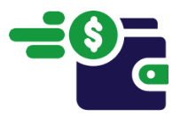
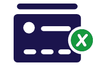
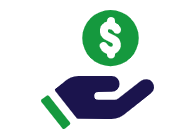
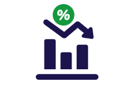
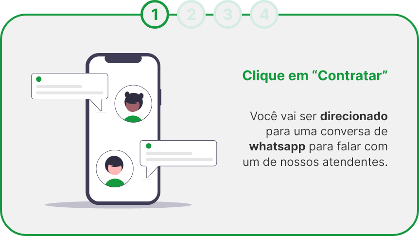
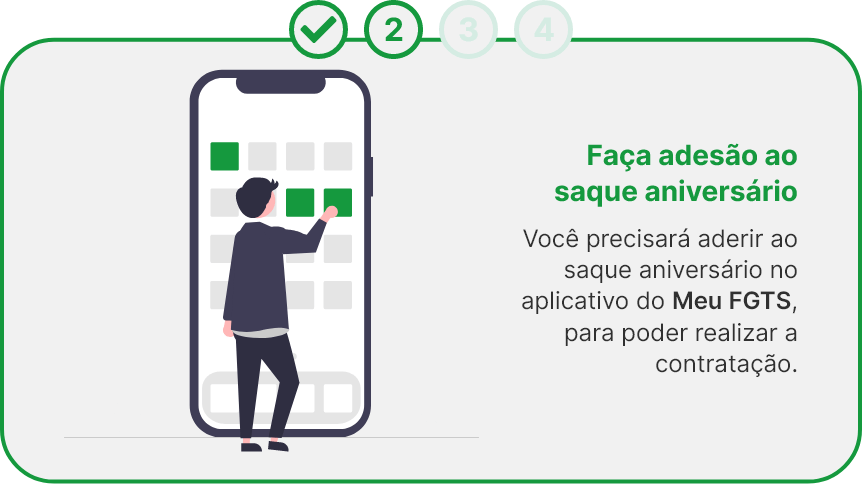
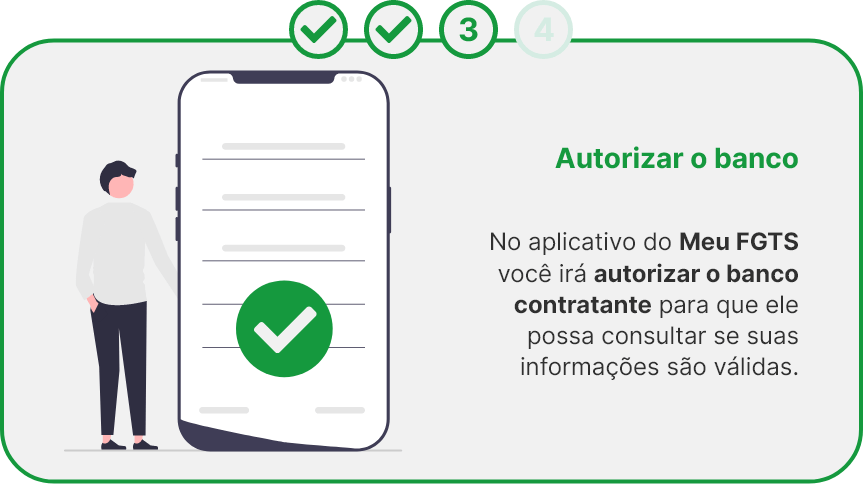
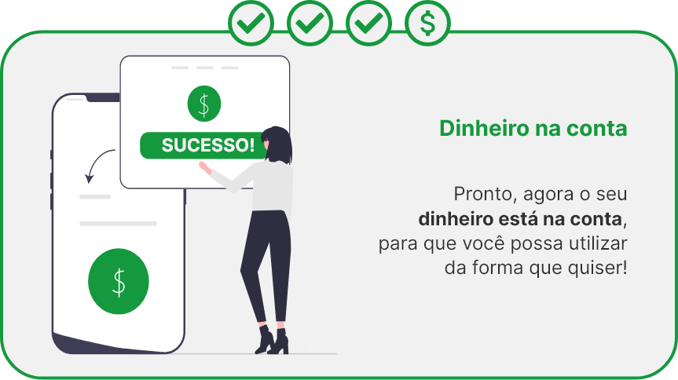

Saque seu FGTS em até 30 Minutos via PIX
O crédito perfeito para você usar como quiser*
Receba seu FGTS online de forma simples, prática e segura. Tudo isso em alguns minutos.
Selecione a opção que você se encaixa, hoje:
Tenho saldo acima de R$ 500 Meu saldo é abaixo de R$ 500Saque Rápido
Em apenas algumas horas
Sem consulta ao SPC e Serasa
Independe se você está negativado
Processo online
Tudo é feito sem precisar sair de casa
Sem parcelas
Você não fica pagando parcelas mensais
Saldo baixos
Saldo no FGTS de apenas R$ 300
Taxas baixas
Consulte para saber mais sobre as taxas
Como contratar?
   Perguntas Frequentes!
Quem está elegível para a contratação do empréstimo com garantia de saque aniversário do FGTS?
Todo trabalhador que possua saldo disponível em conta(s) vinculada(s) do FGTS (contas ativas e inativas), que tenha optado pela modalidade do saque aniversário e que tenha autorizado o Safra a consultar o saldo do saque aniversário disponível.
É possível efetuar a contratação a qualquer momento? Existe algum período no qual a contratação fica suspensa?
Existe um período de 09 (nove) dias úteis que antecede o primeiro dia útil do mês de aniversário do cliente no qual as contratações ficam suspensas devido à indisponibilidade do sistema do FGTS. Exemplo: caso o cliente faça aniversário no mês de maio e o primeiro dia útil do mês seja o dia 03/05 (segunda-feira), devido a indisponibilidade do sistema, as contratações para esse cliente estarão suspensas durante o período de 19/04 a 03/05.
Qual o valor do FGTS que será bloqueado na contratação da operação?
Será bloqueado o valor correspondente ao percentual do(s) saldo(s) da(s) conta(s) vinculada(s) do FGTS, em valor suficiente para, aplicada a alíquota correspondente ao saldo da conta disponível na data da operação e acrescida à parcela adicional, estabelecidas no Anexo à Lei nº 8.036, de 1990, ou em suas alterações posteriores, seja possível a realização do(s) saque(s) aniversário em valor equivalente ao dado em garantia na contratação do empréstimo. O bloqueio do(s) saldo(s) disponível(is) na(s) conta(s) vinculada(s) do trabalhador como garantia do empréstimo está limitado ao valor do(s) saldo(s) disponível(is) na(s) conta(s) vinculada(s) na data da operação, descontados outros bloqueios realizados previamente.
Como é feita a amortização do empréstimo?
A amortização do empréstimo será feita anualmente, mediante o débito dos recursos (disponíveis e bloqueados) da conta vinculada do FGTS no dia da disponibilização pela sistemática do Saque Aniversário, não incidindo em pagamentos mensais.
Posso alterar a modalidade de saque aniversário para saque rescisão depois da contratação do produto?
Caso tenha sido contratado empréstimo com garantia do Saque Aniversário do FGTS, a alteração da modalidade só pode ocorrer após a liquidação de todas as parcelas.
O empréstimo com garantia do Saque Aniversário do FGTS compromete outras linhas de crédito? Consigo desbloquear meu FGTS realizando uma liquidação antecipada?
Não. Esta linha de crédito não compromete a contratação de outras linhas de crédito e não depende de margem consignável.
A empresa que trabalho precisa aprovar a operação?
Não, a empresa que realiza os pagamentos em sua conta do FGTS não possui qualquer vínculo com a contratação do empréstimo com garantia do saque aniversário do FGTS.
Por quanto tempo minha proposta fica válida?
ara garantirmos o cumprimento das condições apresentadas, a proposta permanecerá vigente por até 1 dia útil após a sua digitação. Após esse período, se não formalizada, a proposta será cancelada automaticamente.
Consigo desbloquear meu FGTS realizando uma liquidação antecipada?
Sim, após a quitação do empréstimo o saldo do FGTS será liberado.
Qual a taxa de juros da operação?
A taxa de juros pode variar de acordo com o canal de contratação.